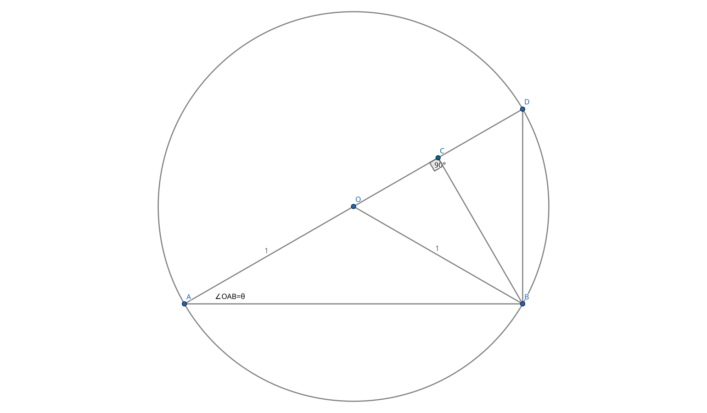

平行四邊形面積 -> 三角形面積 -> 畢氏定理 -> 餘弦定理
https://www.geogebra.org/geometry/gvgvqarp

\begin{align} 已知∠OAB&=θ和圓半徑為1，則可以推理出以下 \\ES \overline{OA} &= \overline{OB} = \overline{OD} = 1 \\ \overline{AD} &= 2 \\ ∠OBA&=θ (因為等腰三角形) \\ ∠AOB&=π-2θ \\ ∠COB&=π-∠AOB=2θ\\ ∠CBO&=\frac{π}{2}-∠COB= \frac{π}{2}-2θ\\ ∠CBD&=\frac{π}{2}-∠CBO-∠OBA= \frac{π}{2}-(\frac{π}{2}-2θ)-θ = θ\\ ∠CDB&=\frac{π}{2}-θ\\ \end{align}
\begin{align} 利用三角形面積來求 sin2θ \\ \overline{BC}=\overline{BO}·sin2θ=sin2θ \\ \frac{\overline{AD}·\overline{BC}} {2} &= \frac{\overline{AB}·\overline{BD}} {2} \\ \overline{AD}·\overline{BC} &= \overline{AB}·\overline{BD} \\ 2·sin2θ&=2·cosθ·2·sinθ \\ sin2θ &= 2·sinθ·cosθ \\ \end{align}
\begin{align} 利用三角形邊長求 sin2θ\\ \overline{BC} &=\overline{BO}·sin2θ=sin2θ \\ \overline{AB} &=\overline{AD}·cos∠CAB = \overline{AD}·cos∠OAB = 2·cosθ \\ \overline{BC} &=\overline{AB}·sin∠CAB =\overline{AD}·cos∠CAB·sin∠CAB = 2·sinθ·cosθ \\ \end{align}
\begin{align} 利用三角形邊長求 cos2θ\\ \overline{CO} &=\overline{BO}·cos∠COB=cos2θ \\ \overline{DO} &=\overline{DC}+\overline{CO} \\ \overline{CO} &=\overline{DO}-\overline{DC} = 1 - \overline{DC} \\ \overline{DC} &=\overline{BD}·sin∠CBD = \overline{BD}·sinθ \\ \overline{BD} &=\overline{DA}·sin∠DAB = 2·sinθ \\ \overline{DC} &= 2·sinθ·sinθ = 2·sin^2θ\\ \overline{CO} &= 1 - \overline{DC} = 1 - 2·sin^2θ \\ cos2θ&= 1 - 2·sin^2θ\\ sin^2θ &= 1-cos^2θ \\ cos2θ&= 1 - 2·(1-cos^2θ) = 1 - 2 + 2·cos^2θ = 2·cos^2θ- 1 \\ \end{align}
\begin{align} 根據以上結果帶入 tan2θ\\ tan2θ&= \frac {sin2θ} {cos2θ} = \frac {2·sinθ·cosθ} {1 - 2·sin^2θ} \\ &= \frac { \frac{2·sinθ·cosθ} {cos^2θ}} { \frac{1 - 2·sin^2θ} {cos^2θ}} \\ &= \frac { \frac{2·sinθ·cosθ} {cosθ·cosθ}} { \frac{1 - sin^2θ- sin^2θ} {cos^2θ}} \\ &= \frac { 2·\frac{sinθ} {cosθ}} { \frac{(1 - sin^2θ)- sin^2θ} {cos^2θ}} \\ &= \frac{ 2·tanθ }{ \frac{ cos^2θ- sin^2θ}{ cos^2θ } } \\ &= \frac{ 2·tanθ }{ \frac{ cos^2θ }{ cos^2θ } - \frac{ sin^2θ }{ cos^2θ } } \\ &= \frac{ 2·tanθ }{ 1 - tan^2θ } \\ \end{align}
\begin{align} 根據以上結果 tan2θ 可延伸公式 令角為2θ\\ adjacent(2θ) &= 1 - tan^2θ \\ opposite(2θ) &= 2·tanθ \\ hypotenuse(2θ) &= \sqrt{ adjacent^2 + opposite^2 } \\ &= \sqrt{ (1-tan^2θ)^2 + (2·tanθ)^2 } \\ &= \sqrt{ 1 - 2·tan^2θ + tan^4θ + 4tan^2θ } \\ &= \sqrt{ 1 + 2·tan^2θ + tan^4θ } \\ &= \sqrt{ (1 + tan^2θ)^2 } \\ &= 1 + tan^2θ \\ sin2θ &= \frac{opposite(2θ)}{hypotenuse(2θ)} = \frac{2·tanθ}{1 + tan^2θ} \\ cos2θ &= \frac{adjacent(2θ)}{hypotenuse(2θ)} = \frac{1 - tan^2θ}{1 + tan^2θ} \\ \\ sin2θ &= 2·sinθ·cosθ \\ &= \frac{2·sinθ·cosθ}{1} \\ &= \frac{2·sinθ·cosθ}{cos^2θ+sin^2θ} \\ &= \frac{ \frac{2·sinθ·cosθ}{cos^2θ} }{ \frac{cos^2θ+sin^2θ}{cos^2θ}} \\ &= \frac{ \frac{2·sinθ}{cosθ} }{ \frac{cos^2θ}{cos^2θ}+\frac{sin^2θ}{cos^2θ}} \\ &= \frac{ 2·tanθ }{ 1 + tan^2θ } \\ cos2θ &= 1 - 2·sin^2θ \\ &= \frac{1 - 2·sin^2θ}{1} \\ &= \frac{1 - 2·sin^2θ}{cos^2θ+sin^2θ} \\ &= \frac{(1 - sin^2θ)- sin^2θ}{cos^2θ+sin^2θ} \\ &= \frac{ \frac{cos^2θ- sin^2θ}{cos^2θ} }{ \frac{cos^2θ+sin^2θ}{cos^2θ}} \\ &= \frac{ \frac{cos^2θ}{cos^2θ}-\frac{sin^2θ}{cos^2θ} }{ \frac{cos^2θ}{cos^2θ}+\frac{sin^2θ}{cos^2θ}} \\ &= \frac{ 1-tan^2θ }{ 1+tan^2θ} \\ \end{align}